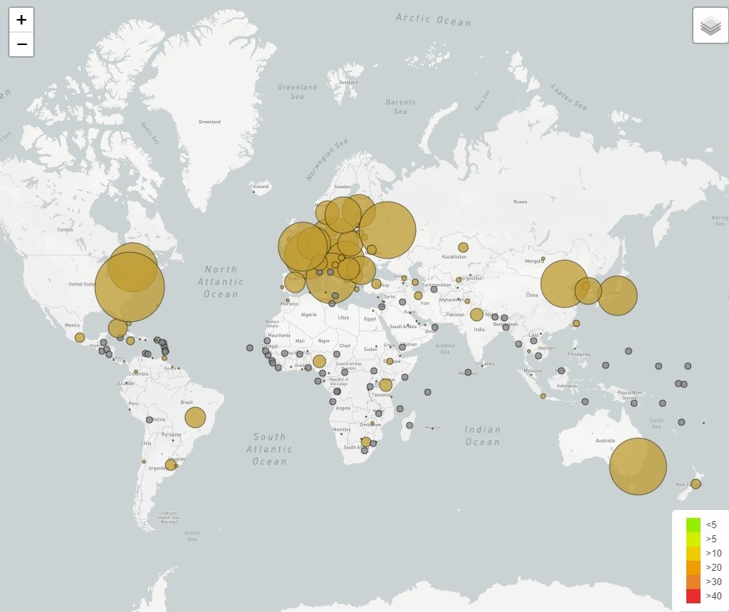
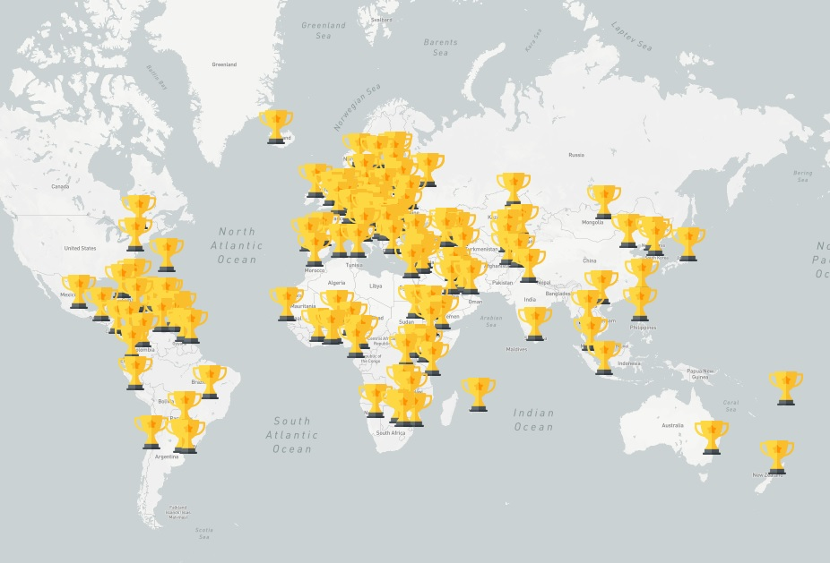

Can predict a win?
Data is an important part of the sports industry. Not only can data analytics help teams win games, but these statistics can also help improve player performance, prevent injuries and encourage fans to attend games. Through this analysis, our team seeks to determine if it is possible to predict an athlete's performance based on personal features.
Using data from the Olympic games from 1900 to 2016, we are using a Random Forest Classifier to predict if Olympic athletes will earn a medal based on their physical attributes.
Medals won by countries
Average Athlete
